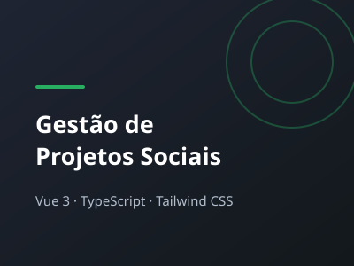
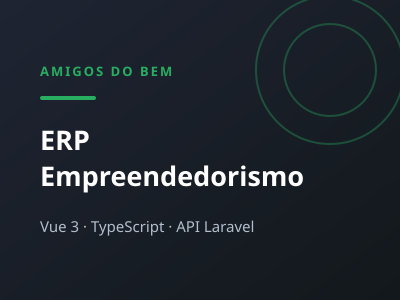
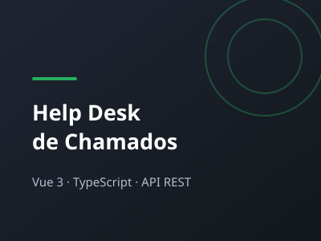

About meSobre mim
Informações Sobre mim
Desenvolvedor Front-end com foco em Vue 3, TypeScript e Tailwind
CSS. Faço parte da equipe de tecnologia da Amigos do Bem,
instituição que atua no combate à fome e à miséria no sertão
nordestino. Meu trabalho é construir os sistemas internos que
sustentam essa operação: uma plataforma de gestão de projetos
sociais, um ERP para a área de empreendedorismo e um help desk
usado pelas unidades para abrir e acompanhar chamados.
Esse contexto moldou meu jeito de trabalhar. Quem usa os sistemas
que eu desenvolvo nem sempre tem familiaridade com tecnologia ou
uma boa conexão à internet — então cada tela precisa ser simples,
rápida e óbvia. Interface bonita é consequência; interface que a
pessoa consegue usar sozinha, no primeiro dia, é o objetivo.
No dia a dia trabalho com Vue 3, TypeScript, Tailwind CSS e
consumo de APIs REST. Tenho também boa base em Laravel e
PostgreSQL, o que me permite entender o sistema de ponta a ponta e
conversar de igual para igual com o back-end — mas é no front-end
que está minha especialidade e o foco da minha carreira. Estou
cursando Análise e Desenvolvimento de Sistemas e sigo estudando o
que aparece pela frente: arquitetura de componentes, performance,
acessibilidade e boas práticas de código.
3
Sistemas em
Produção
4+
Anos de
Experiência
Minhas Habilidades
Experiência e Formação
jan 2026 - Atualmente
Programador Front-end Júnior - Amigos do Bem
Desenvolvimento dos sistemas internos da instituição em Vue 3, TypeScript e Tailwind CSS, consumindo APIs REST em Laravel: plataforma de gestão de projetos sociais, ERP de empreendedorismo e help desk de chamados.
ago 2024 - Atualmente
Instrutor - Amigos do Bem
Formação em informática e tecnologia para turmas da instituição no sertão nordestino.
mai 2024 - Atualmente
Desenvolvedor Front-end - Autônomo
Desenvolvimento de telas para o aplicativo/site ADB-Chamados.
fev 2022 - ago 2024
Monitor de laboratório de informática - Amigos do Bem
Suporte ao laboratório de informática e apoio aos alunos no uso das ferramentas digitais.
2023 - Cursando
Análise e Desenvolvimento de Sistemas - Centro Universitário Paraíso, hoje na UNOPAR
Graduação iniciada no Centro Universitário Paraíso em 2023 e em andamento na UNOPAR.
2017 - 2020
Técnico em Informática - EEEP Padre João Bosco de Lima
Curso técnico integrado ao ensino médio.
Meu PortfolioMinhas Atividades
Sistemas internos da Amigos do Bem — repositórios privados, sem link público.

Gestão de Projetos Sociais
Vue 3 · TypeScript · Tailwind CSS · API REST

ERP de Empreendedorismo
Vue 3 · TypeScript · Tailwind CSS · Laravel

Help Desk de Chamados
Vue 3 · TypeScript · Tailwind CSS · API REST
Entre em Contato
Fale agora
Aberto a trocar ideias sobre front-end, Vue e tecnologia aplicada a impacto social.
: Mauriti, Ceará, Brasil
: anonimousdex01@gmail.com